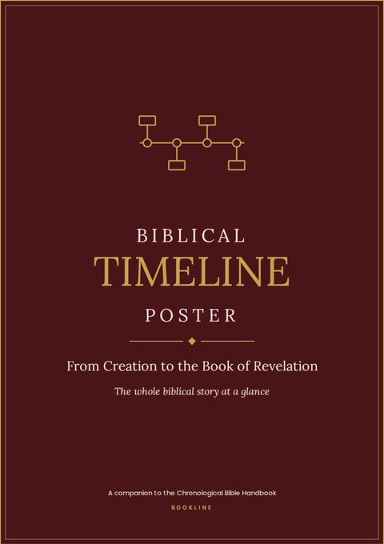
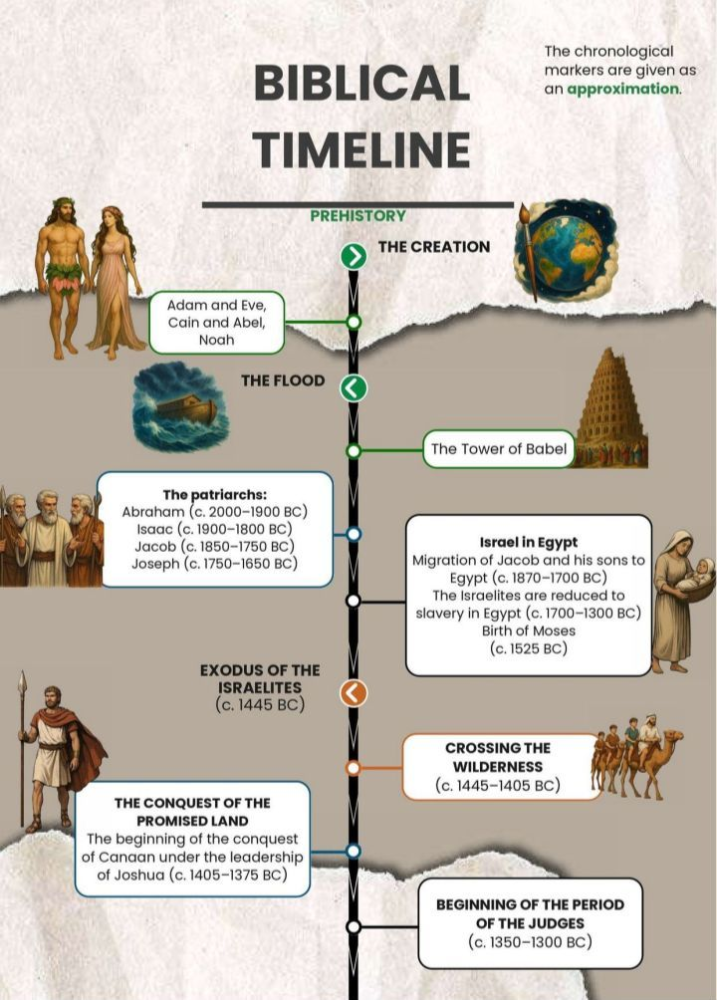
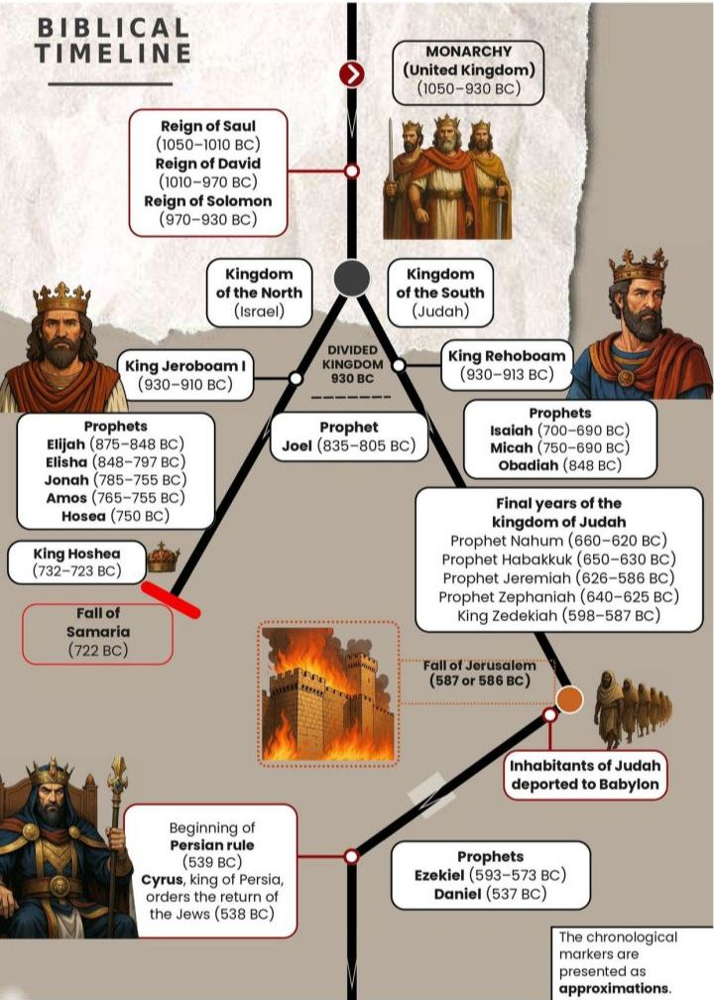
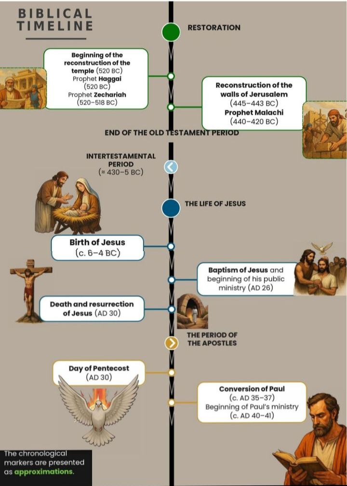
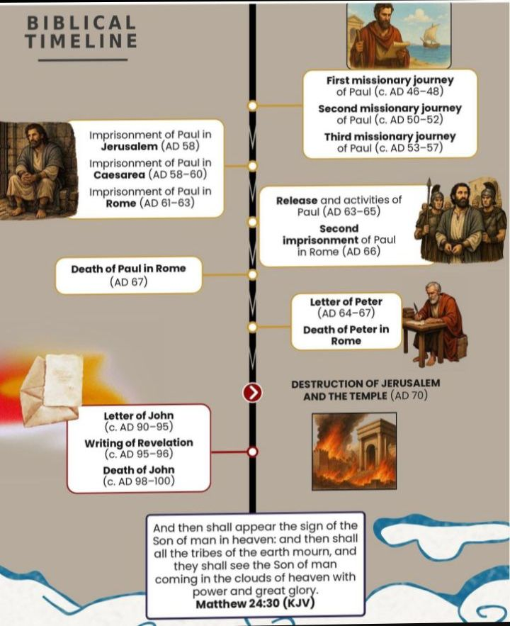

An illustrated Bible study companion
Chronological Bible Handbook See the whole Bible as one connected story, in the order it happened
Stop reading the Bible as disconnected pieces. This 106-page illustrated guide walks you through Scripture in chronological order, so you can understand how every book fits into God's plan.
Handbook + 3 free bonuses · offer ends in
48h 00m 00s
- 106-page illustrated PDF
- Instant download after purchase
- King James Version (KJV)
- 3 free bonuses included
The challenge
Why the Bible can feel hard to follow as one story
Many sincere Christians read the Bible faithfully and still find it difficult to see how everything fits together. This is very common, and there is a simple reason for it.
- The Bible is a library of many books. It contains 66 books written over many centuries, by different authors, in different settings.
- The books are not arranged by the date of their events. They are grouped by type, such as law, history, poetry, prophecy, Gospels and letters, rather than simply in the order things happened.
- So the timeline is not always obvious. It can be hard to know what happened first, what came later, and how events in one book connect with events in another.
- We often know the stories, but not the bigger picture. Many readers know Noah, Moses, David, Daniel and Paul well, yet are not sure where each one stands in the larger history of Scripture.
The traditional order of the Bible has its own literary and canonical purpose, and it serves the Church well. The Chronological Bible Handbook does not replace that order. It simply gives you another way of viewing the biblical story: chronologically.
The solution
A visual chronological companion for your Bible study
The Chronological Bible Handbook walks through the whole Bible according to the order of its events. Using tables, timelines and illustrations, it helps you see Scripture as one connected story, from Creation to the Book of Revelation.
- Creation
- The Exodus
- Kings of Israel & Judah
- The 400 silent years
- Paul's journeys
- Revelation
With this handbook you can:
- Follow the biblical story in orderMove through events chronologically, from Creation to Revelation.
- See how the books relate to historyEach book is placed next to the events it narrates and its estimated date of writing.
- Understand the major periodsIncluding the divided kingdom and the 400 silent years between the Testaments.
- Locate events and books quicklyFind where a book or event belongs within the larger timeline.
- Study visuallyTables, timelines and illustrations on almost every page.
- Review key information easilyClear summaries and "Did you know?" boxes help you revisit what you have studied.
What's inside
106 illustrated pages of chronological Bible study resources
Here is what you will find in the handbook.
The chronological overview
Old & New Testament summaries
Chronological tables showing each book, the events it narrates, its estimated date of writing and its page number.
4-page biblical timeline
An illustrated timeline from Creation to the Book of Revelation, including the division of the kingdom into Israel (North) and Judah (South).
The 400 silent years
A section explaining the period between the Old and New Testaments.
Book-by-book study
Every book of the Bible
A presentation of each book, from Genesis to Revelation.
Authors, periods & contexts
Background information on who wrote each book, when, and in what context.
Key sections & chapter references
The main sections of each book, with chapter references to guide your reading.
KJV Bible verses
Bible verses quoted from the King James Version.
"Did you know?" boxes
Short information boxes that highlight helpful biblical facts.
Illustrations throughout
Illustrations on almost every page to make study more visual.
Visual tables & presentations
The 10 plagues
A visual table of the ten plagues of Egypt and the Egyptian gods they judged.
Kings of Israel & Judah
A visual table of the kings of both kingdoms, with references.
Zechariah's 8 visions
A visual presentation of the eight visions of Zechariah.
The armour of God
A visual presentation of the armour of God.
The 7 churches of Revelation
A visual presentation of the seven churches.
Paul's 3 missionary journeys
A visual presentation of the apostle Paul's three missionary journeys.
And other visual tables
Further visual tables and chronological resources contained in the handbook.
Free bonuses
Three free bonuses included with your purchase
Handbook + 3 free bonuses · offer ends in
48h 00m 00s
Together with the handbook, you receive three resources to help you study the Bible chronologically and put what you learn into practice.
-
Included FREE with your purchase
Bonus 1
The Chronological Bible Reading Plan (365 Days)
A printable PDF reading plan that takes you through the whole Bible in chronological order in 365 days. The reading plan helps you put the chronological approach into practice throughout the year.
- One reading for each day, about 15 minutes of Bible reading
- A checkbox for every day to follow your progress
- The Bible books and passages to read each day
- Points you to the Handbook as each new book begins
-

Included FREE with your purchase
Bonus 2
Biblical Timeline Poster
The biblical timeline from Creation to the Book of Revelation in poster format, so you can see the whole story at a glance.
- See the main periods and events of the Bible at a glance
- Keep the timeline in view while you read
- A helpful visual for teaching and group study
-
Included FREE with your purchase
Bonus 3
Archaeology and the Bible: 12 Discoveries That Illuminate the Biblical Story
An illustrated PDF guide. Explore archaeological discoveries that shed light on the historical world of the Bible.
- 12 discoveries in chronological order, from the Merneptah Stele to the Gallio Inscription
- Clearly separates what the evidence shows, its historical context and its link to the Bible
- Bible references, links to the Handbook and a reflection question for each discovery
Who it's for
A practical resource for Christians at every level of Bible study
For Christians
For those who want to see the Bible as one connected story.
For New Believers
For those beginning to understand the structure and story of Scripture.
For Bible Study Leaders
For those who want a visual reference while preparing or leading Bible studies.
For Sunday School Teachers
For teachers who want chronological and visual resources to support Bible teaching.
For Pastors and Ministers
For ministers who want a compact chronological reference for Bible study and teaching.
For Bible School Students
For students who want a visual overview of biblical books, periods and events.
For Parents
For parents who want to help their children understand the biblical story chronologically.
Look inside
The 4-page biblical timeline
Here are the four timeline pages from the handbook, from Creation to the Book of Revelation. Turn the pages like a book, or scroll through the timeline in one continuous view.




Page 1 of 4
Tap a page to open it full size. The dates on the timeline are given as approximations.
Your purchase
Included with your purchase
Handbook + 3 free bonuses · offer ends in
48h 00m 00s
- Chronological Bible Handbook — 106-page illustrated PDF
- FREE — The Chronological Bible Reading Plan (365 Days)
- FREE — Biblical Timeline Poster
- FREE — Archaeology and the Bible: 12 Discoveries That Illuminate the Biblical Story
The handbook includes a chronological biblical timeline, visual tables, a presentation of every book of the Bible, KJV references and verses, and other visual study resources.
Immediate download after purchase. The handbook and the included digital resources are available through the purchase platform as soon as your purchase is complete. Read them on your smartphone, tablet or computer.
FAQ
Frequently asked questions
How do I receive the handbook?
After completing the purchase, the PDF is delivered immediately through the purchase platform.
How do I receive the free bonuses?
The three bonuses are included with your purchase of the handbook. Like the handbook, they are provided through the purchase platform after your purchase.
Is the download immediate after purchase?
Yes. The handbook is available for immediate download after a successful purchase.
Can I read the handbook on my phone?
Yes. The PDF can be read on smartphones, tablets and computers.
Can I print the handbook?
The handbook is provided as a PDF. Whether you print it depends on your printer, device and personal use.
Which Bible version is used?
The Bible quotations and references presented in the handbook use the King James Version (KJV).
How do I pay?
Payment is processed through the purchase platform linked by the "Get the Handbook Now" button. The available payment options are shown on that page.
What if I have difficulty downloading my purchase?
We are here to help. If you experience any difficulty downloading the handbook after your purchase, contact us on WhatsApp and we will assist you in obtaining your purchased file.
Tap the button below to send us a message:
Contact WhatsApp SupportBegin your study
See the Bible as one connected story
- See the Bible's story in chronological order.
- Understand how the books and events connect.
- Use the handbook as a visual companion for Bible study.
Handbook + 3 free bonuses · offer ends in
48h 00m 00s
Illustrated PDF · 106 pages · 3 free bonuses · Instant download after purchase
This offer ends in
48h 00m 00s
Chronological Bible Handbook + 3 free bonuses: Reading Plan (365 Days), Biblical Timeline Poster and Archaeology and the Bible.
Get the Handbook NowJOIN OUR WHATSAPP CHRISTIAN LIBRARY GROUP
Get free Christian books by joining our WhatsApp community.
JOIN THE WHATSAPP GROUP